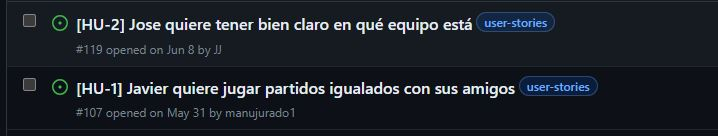

TFG realizado por Manuel Jurado Trillo
Buscar problemas que se me presentaran en el día a día.
Cada vez que me reunía con amigos/compañeros de trabajo para jugar a fútbol pasaba lo siguiente:
Aplicaciones que reparten jugadores en equipos pero de manera aleatoria.
Aplicaciones que asignan un nivel a un jugador en función de su rendimiento.
Historias de usuario → Issues → Hitos (PMV cada vez más complejos)
Este proceso se ha llevado a cabo siguiendo el Diseño Dirigido por Dominio (DDD).
Creación de una API REST que cumpliera los siguiente objetivos:
Se han ido abordando los siguientes hitos, que conforman PMV.
Comunicación fluida entre alumno y tutor.
Criterios:
Oportunidad para conocer un nuevo lenguaje.
Criterios:
Necesario para manejar todas las dependencias del proyecto.
Criterios:
Automatizar tareas (Comprobar sintaxis, lanzar tests ...).
Criterios:
Identificación y estructura de datos de los objetos valor
Identificación y estructura de datos de la entidad
Creación de algoritmo para creación de equipos igualados
Gestión de niveles post-partido
Es necesario comprobar que las estructuras de datos y la lógica de negocio funciona correctamente.
Criterios:
Dirigir la ejecución de los tests y obtener los resultados.
Criterios:
Posibilidad de comprobar si el código es correcto al realizar cambios.
Criterios:
Aplicación válida en las versiones con soporte.
Go tiene su biblioteca estándar, por lo que es necesario saber si merece la pena añadir una capa más al proyecto usando algún framework.
Se ha decidido utilizar un framework para la creación de la API debido a:
Criterios:
Es un backend que se puede usar desde diferentes front-end, por lo que la documentación es esencial.
Accesibilidad a usar la API.
Criterios:
El proyecto se ha centrado en una lógica de negocio sólida y bien testeada, por lo que quedan aún issues sin resolver, agrupados en milestones.
Dos líneas de mejora:
| Concepto | Coste | Comentarios |
|---|---|---|
| MSI GE62 7RD | 210€ | Se ha aplicado una amortización del 15% al año. Se ha usado durante un año y costó 1400€ |
| Software | 0€ | No se ha usado ningún recurso software de pago para la realización del proyecto |
| Despliegue | Desde 0€ | Se ha desplegado la API de manera gratuita, pero en función de las necesidades en un futuro, se podrían mejorar las características adquiriendo un programa de pago. |